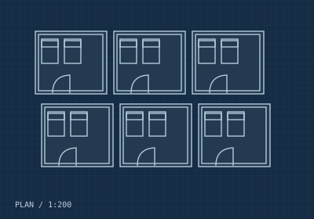
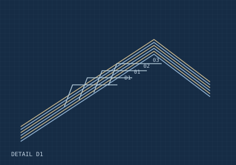
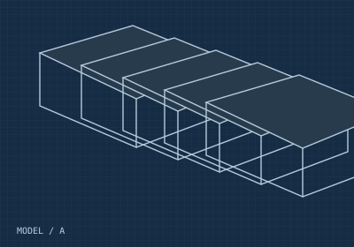

برداشت ابعاد، نور، سازه و آنچه باید در ساختمان حفظ شود.
معماری · طراحی فنیاز درون
از درون
به بیرون
طراحی میکنیم.
دفتر معماری اشنیت، برای طراحی خانه، بازسازی و مرمت بناهای مسکونی. از نخستین برداشت و بررسی سازه تا آخرین نقشهٔ اجرایی و روز تحویل کلید کنارتان هستیم.

دفتر
Schnittبرگ
۰۱محل
تهرانمقیاس
۱:۱۰۰
Schnittبرگ
۰۱محل
تهرانمقیاس
۱:۱۰۰
اول فضا، بعد نما. از مسیرهای خانه، نور صبح و جای میز غذاخوری شروع میکنیم. وقتی فضاهای درون به درستی کنار هم نشستند، پوستهٔ ساختمان را دورشان میکشیم.


۱۳۸۳سال تأسیس
۱۲۰+واحد طراحیشده
پروژهها / Schnitt
پنج مرحله، یک طرح.
از برداشت بنا تا تحویل کلیدپلان، مقطع و حجم را تا رسیدن به رابطهٔ درست میان فضا، نور و هزینه بازبینی میکنیم.
مجموعهٔ نقشهها و مدارک لازم برای ارائه آماده میشود.
اتصالها، مصالح و ریزهکاریهای ساخت روی نقشه میآیند.
کارگاه، زمانبندی و کیفیت اجرا تا تحویل بررسی میشوند.

۳۸پروژهٔ معماری
۶معمار و طراح
۱همراه از طراحی تا تحویل
خانهات چه امکانی در دل خود دارد؟
در نخستین جلسه با هم دربارهٔ زمین، بنا و فضایی که به آن نیاز دارید صحبت میکنیم.
درخواست پروژهپرسشهای رایج
برآورد پس از گفتوگوی اولیه و روشن شدن ابعاد و مراحل پروژه آماده میشود.
از تغییر آشپزخانه تا تبدیل زیرشیروانی به فضای زندگی، در مقیاسهای مختلف کار میکنیم.
بازهٔ بررسی به مدارک پروژه و شرایط شهرداری بستگی دارد.
از پروژهتان بگویید.
دفتر اشنیت، تهران
اشنیت
تهران، محلهٔ یوسفآباد
نقشهٔ شماتیک محله؛ ورودی از پیادهروی ضلع شرقی میدان است.
 انتخاب این قالب
انتخاب این قالب